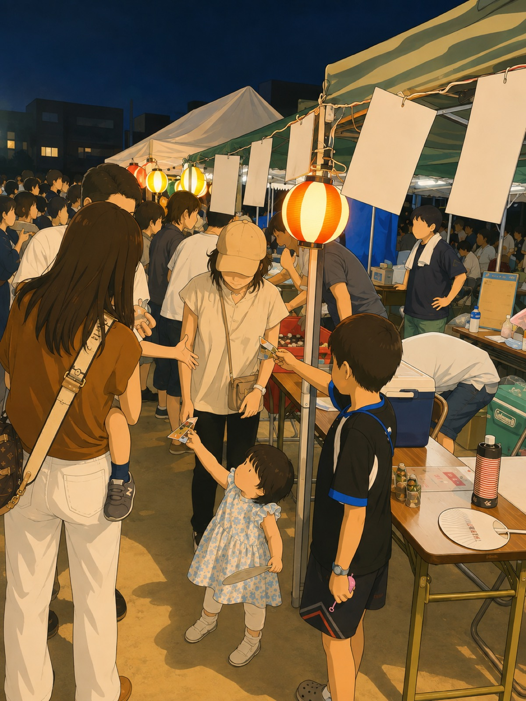
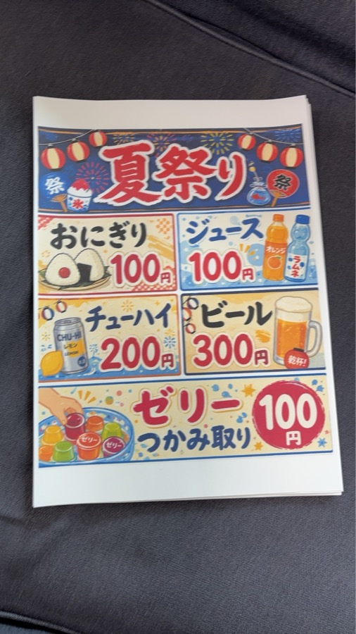

こんにちは、まっさんです。
前回の日記で「1年目にしては上出来やった」と書いた盆踊り大会の出店。今日はその中身を、数字も含めて正直に振り返っておこうと思います。来年やる人、よその町会で出店を考えている人の参考になればうれしいです。

当日の会場の様子（イラスト加工しています）
結論から言うと、初日は正直けっこう危うくて、2日目に立て直して何とか黒字で終われました。途中経過も含めて、ありのまま書きます。
ドリンクの提供は、水槽に水を張ってそこにドリンクを入れ、氷を投入して冷やすという方法でやっていました。
ところが最初に張った水の量が多すぎました。せっかく入れた氷が、あっという間に溶けてしまったんです。
このままでは冷えたドリンクを出せない。急きょ、氷を買いに走りました。
祭りが始まってからは、事前に町内会のオープンチャットで「氷を持ってきてください」とお願いしていたのが効きました。10名ほどの方が氷を持ってきてくれて、最後まで冷えたドリンクを提供できました。ここは、デジタル化を進めてきた効果を実感した場面でした。
会議で決まったゼリーのつかみ取り企画。開始直後はあまりお客さんが来ず、担当者が気前よく大盤振る舞いしてしまい、ゼリーを大量に配っていました。
その後、だんだん人が並ぶようになり、「このままではゼリーがなくなってしまう」と気づいて、おまけを控えて適正な量に調整。運営を立て直しました。
それでも、20時前には完売してしまいました。序盤で配りすぎたのが響いた形です。
いちばんの反省点はおにぎりです。祭りの開始直後から最後まで、ほとんど売れませんでした。
理由はいくつか思い当たります。呼びかけがあまりできていなかったこと。メニュー表の表記も小さく、おにぎりを売っていること自体が来場者に認知してもらえていなかったこと。そしてそもそも、盆踊り大会でのおにぎりの需要が、想像していたよりもずっと少なかったようです。ここまで需要がないとは、正直思っていませんでした。
1日目が終わってすぐ、担当メンバーで反省会をしました。ドリンクの補充、ポップの作り直し、ゼリーの買い足し。話すことは山ほどありました。
そして軽く集計してみると、マイナス2万円。
売れ残った分は廃棄せず、周りの出店の方やスタッフのみなさんで分けました。もったいない思いをせずに済んだのは救いでした。
2日目の午前中から、各担当者が買い出しに走りました。そしてメニュー表も、見やすく大きく作り直しました。

2日目に向けて作り直したメニュー表
ドリンクは、前日の水がある程度まだ冷えていたので量を減らし、さらにドリンクを箱から水槽へ直接入れるのではなく、いったん余っていたクーラーボックスで冷やしてから水槽に移すように変更。2日目も地域の方10名ほどが氷を持ってきてくれたこともあり、最後まで氷が水槽に残った状態で販売できました。
ゼリーは初日と同じ量を確保。最初からおまけを控えたおかげで初日よりは長くもちましたが、それでも一番早く売り切れた商品になりました。来年もやるなら、仕入れは倍の量にしようと思っています。
おにぎりは、ポップを作り直し、前日の反省を踏まえて最初から声かけを徹底。ドリンクを買いに来た方、ゼリーのつかみ取りをする方にも声をかけました。前日よりは売れましたが、やはり需要そのものが少なく、完売までは届きませんでした。
最終の集計は、正直しばらく怖くてしたくありませんでした。おそるおそる計算してみると、数千円の利益が出ていました。
初日のマイナス2万円から考えると、2日目でしっかり立て直せたことになります。
7月の頭には「呼びかけても返信ゼロ」でへこんでいました。それが会議に20名集まり、仕入れに動いてくれる人が出て、朝6時半の設営に人が来て、当日は隣の町会と一緒に店を回せた。氷を持ってきてくれた方、買い出しに走ってくれた方、一緒に「もうちょっとこうしよう」と考えてくれた方。何のノウハウもないまま思いだけで走り出した出店でしたが、この2日間を通してウチの町内会と隣の町内会が、ひとつにまとまった気がしています。
動いてくださった皆さん、ほんまにありがとうございました。
さて、ひと息つく間もなく、次は8月23日の地蔵盆です。
ほな、また。